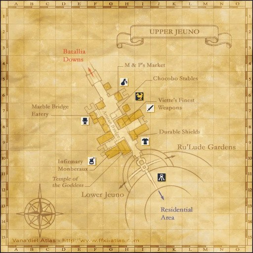
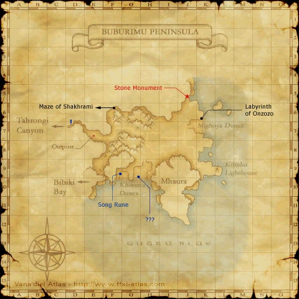

Before you begin
- Complete AMK 3.
- Mission must be active before gathering.
- Pickaxes, Hatchets and Sickles; spare tools recommended.
Starting point
Inconspicuous Door · Upper Jeuno · H-8
Era note: 2009 level-75-era add-on. Modern retail shortcuts and item-level solo claims are not assumed on Zenith.
Walkthrough
- Bring spare Pickaxes, Hatchets and Sickles. With this mission active, mine in an original or Zilart area until you obtain the Sturdy metal strip key item.
- Log in an original or Zilart area for the Piece of rugged tree bark; avoid Buburimu Peninsula for this objective. Harvest in an original or Zilart area for the Savory lamb roast key item.
- You may collect all three before returning. Examine the Upper Jeuno H-8 door repeatedly to deliver the strip, bark and roast in that order, watching each scene.
- These are gathering key items, including the roast; buying ordinary food does not fulfill the request.
Battle and progress notes
- The items are random gathering results; several attempts or broken tools may be needed.
Completion and reward
Story progression.
What this opens
- AMK 5
Area maps
Open a zone below, then select a map to enlarge it. Match the named floors and grid coordinates in the steps; these are reference area maps, not a live position tracker.
Upper Jeuno



Buburimu Peninsula



Zone guides
References
Steps are an original summary of the linked walkthrough and reviewed source. Other servers’ bonus rewards are not included. How to read requirements, waits and battlefield notes.